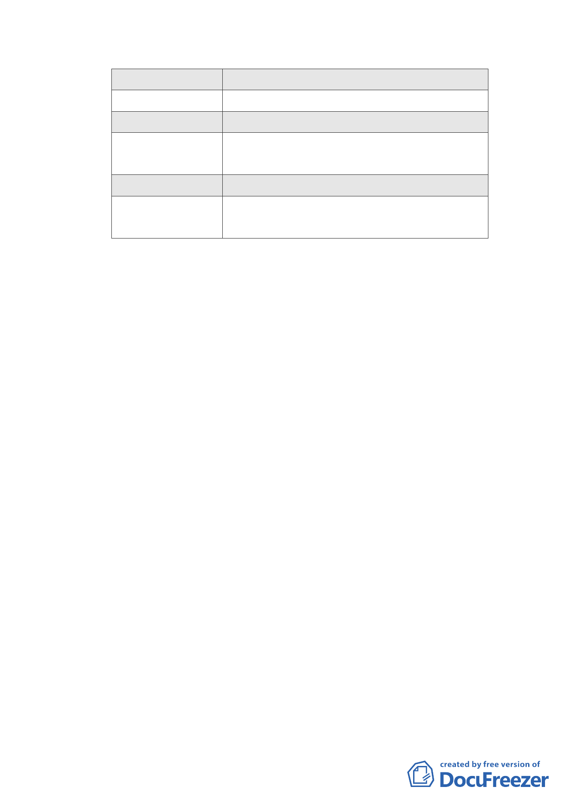

宏普建設 B4
廣場式開放空間
長虹建設 A7
廣場式開放空間
忠泰建設 A2
室內挑空開放空間、廣場式開放空間
全聯企業 B2
廣場式開放空間、立體人行通道、地面人行
通道
瓏山林企業 B2 廣場式開放空間
福華大飯店 A2 室內挑空開放空間、廣場式開放空間、地面
人行通道
（五）請各申請單位依專案小組會議審查意見修正計畫書、圖，
送交市府發展局審閱後於本（6）月 14 日下班前送達本會，
俾儘速協助排入本會 6 月份委員會議進行審議。
（六）因本次會議時間已晚，未及討論之「修訂臺北市『基隆河
（中山橋至成美橋段）附近地區土地使用分區與都市設計
管制要點』（北段地區）計畫案」，將另擇期召開會議進行
討論。
二十、99.8.16 第四次專案會議審查意見：
（一）「土地使用」部分：
1、同意本次會議市府所擬修訂內容，即維持原計畫，「商業
區及娛樂區 1/2 總容積應作指定使用項目，其餘比照商三
但不准作住宅」。
2、本項提大會審議時仍應補強並予說明之議題：
（1）大彎北段地區維持原商業副都心發展構想之定位、特色
及未來營運的重點。
（2）未來本區在建築管理方面的強化與配套，以及未來商業
區的發展與管理計畫（土地分割較細區塊在使用用途上
的差異性）。
（3）週邊工業區、住宅區都市更新、都市再生的配套與強化。
（4）台北市住宅、商業供需量的說明。
（5）請補充有關生態、環境與維生系統的說明。
- 51 -